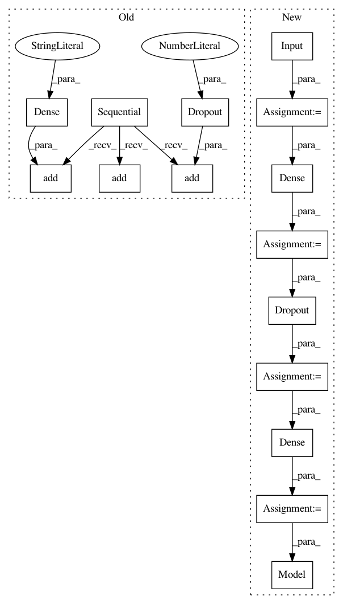

c3b512fa98f0c560ec59a73858057bc4decab75e,examples/mnist_siamese.py,,create_base_network,#Any#,65
Before Change
def create_base_network(input_dim):
"""Base network to be shared (eq. to feature extraction).
"""
seq = Sequential()
seq.add(Dense(128, input_shape=(input_dim,), activation="relu"))
seq.add(Dropout(0.1))
seq.add(Dense(128, activation="relu"))
seq.add(Dropout(0.1))
seq.add(Dense(128, activation="relu"))
return seq
def compute_accuracy(y_true, y_pred):
After Change
def create_base_network(input_dim):
"""Base network to be shared (eq. to feature extraction).
"""
input = Input(shape=(input_dim,))
x = Dense(128, activation="relu")(input)
x = Dropout(0.1)(x)
x = Dense(128, activation="relu")(x)
x = Dropout(0.1)(x)
x = Dense(128, activation="relu")(x)
return Model(input, x)
def compute_accuracy(y_true, y_pred):
"""Compute classification accuracy with a fixed threshold on distances.
In pattern: SUPERPATTERN
Frequency: 3
Non-data size: 15
Instances
Project Name: keras-team/keras
Commit Name: c3b512fa98f0c560ec59a73858057bc4decab75e
Time: 2017-10-11
Author: ozabluda@gmail.com
File Name: examples/mnist_siamese.py
Class Name:
Method Name: create_base_network
Project Name: keras-team/autokeras
Commit Name: b80fb3bdcfeac64d91b7365be1196392e013dcb8
Time: 2018-01-05
Author: jhfjhfj1@gmail.com
File Name: autokeras/generator.py
Class Name: DefaultClassifierGenerator
Method Name: generate
Project Name: keras-team/keras
Commit Name: e9aa6a5ebe3468f6413ef15ddde128725139abe9
Time: 2017-07-18
Author: gokcen.eraslan@gmail.com
File Name: tests/keras/test_callbacks.py
Class Name:
Method Name: test_TensorBoard